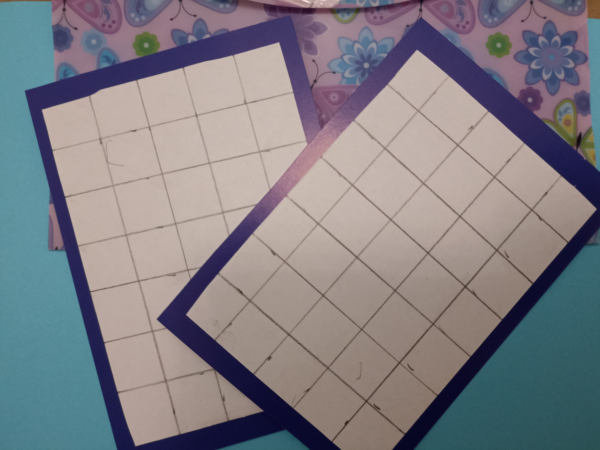
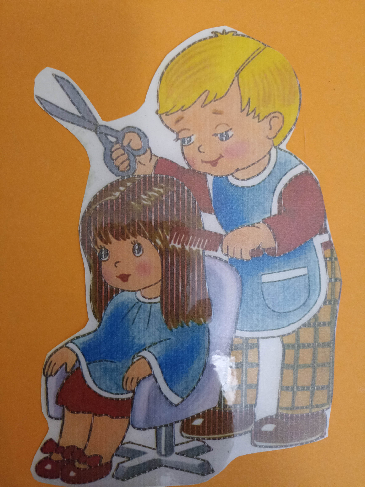
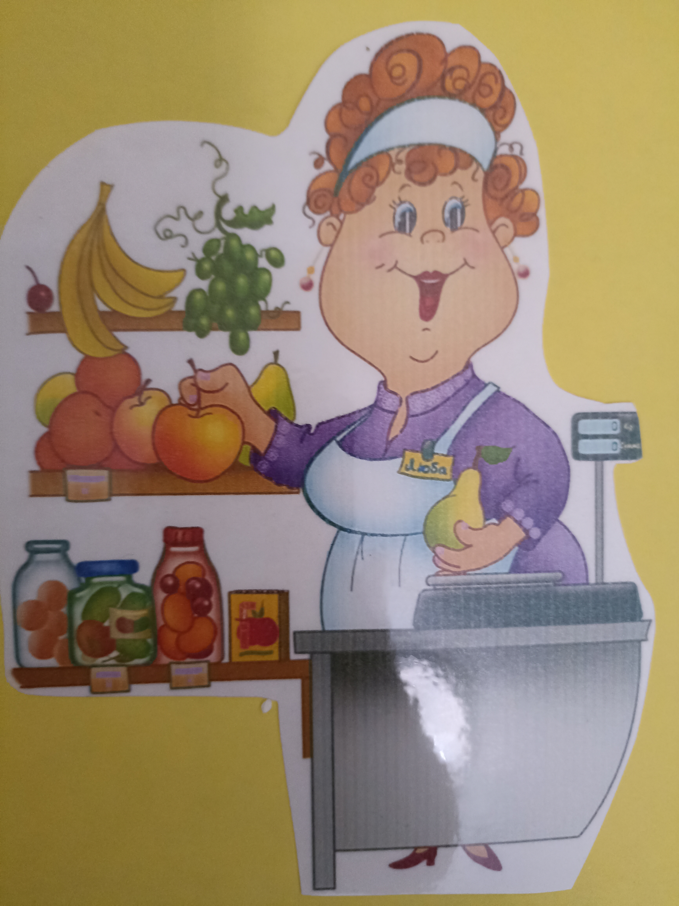
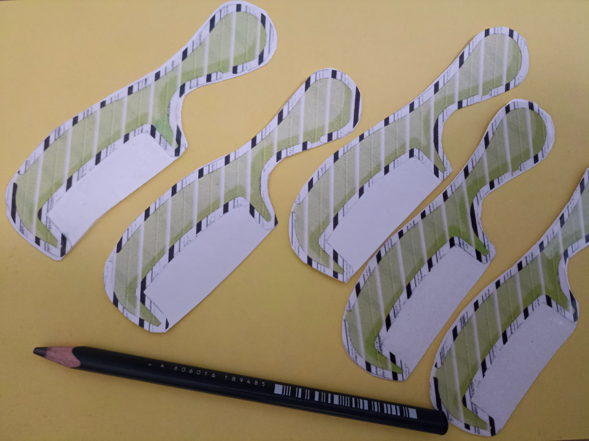
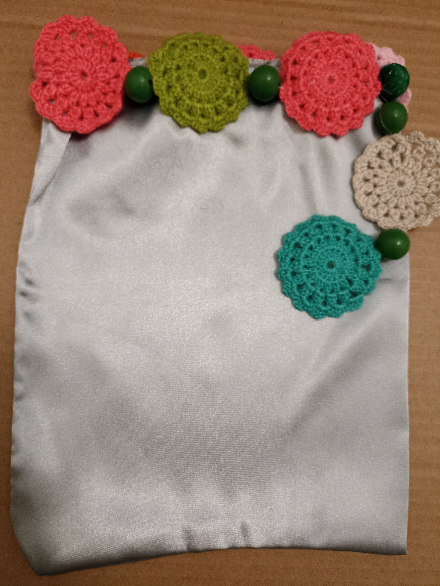
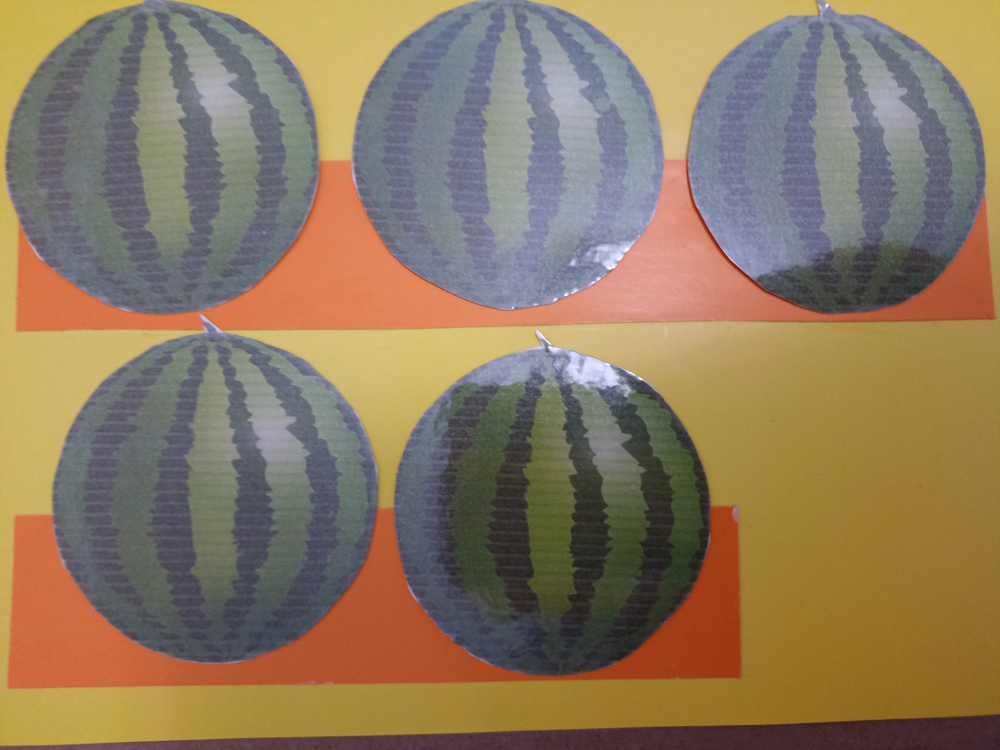
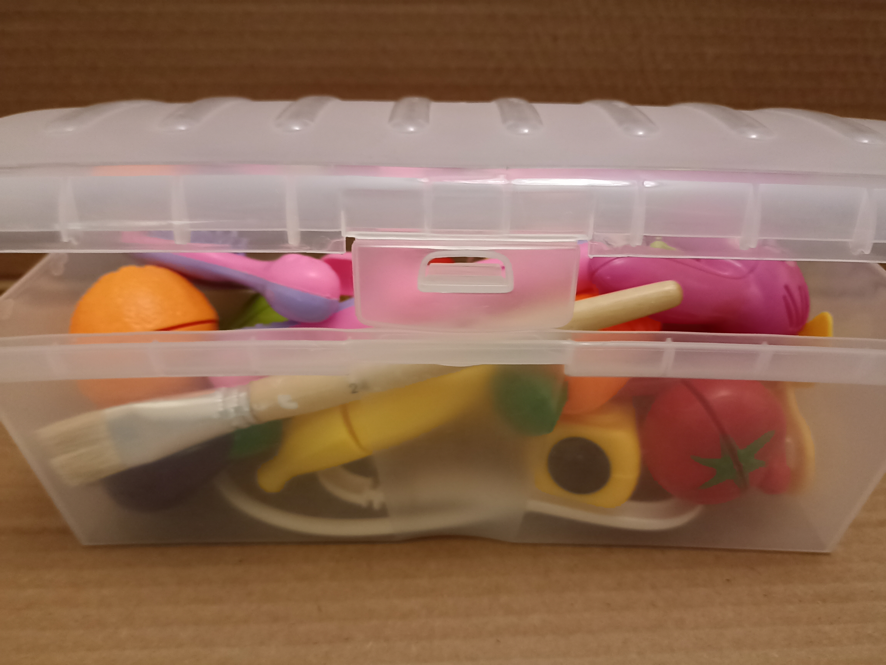
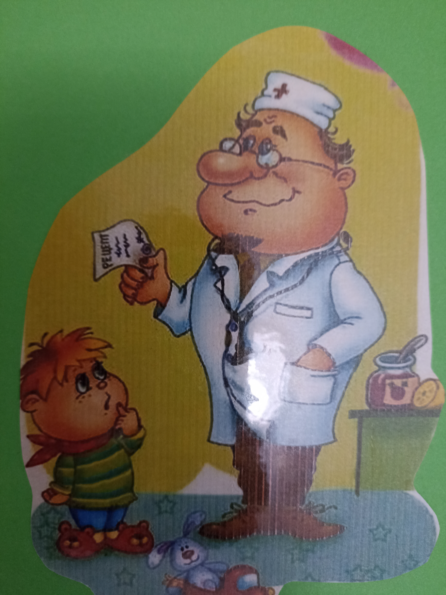
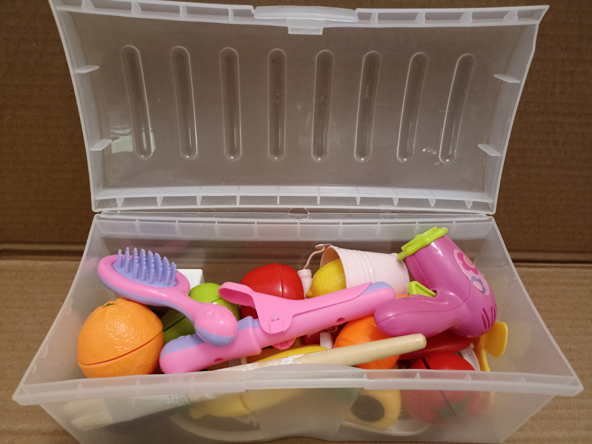

Для младших дошкольников 👧👦
Развивать зрительное внимание и восприятие дошкольников. Совершенствовать грамматический строй речи. Формировать знания о профессиях.



Ребёнок берёт предметы из сундучка и рассказывает:
👶 "Этот молоточек нужен плотнику, им можно забивать гвоздики!"






✏️ Задание: Нарисовать недостающие зубчики на расческе
💊 Задание: Нарисовать и раскрасить таблетки
🍉 Задание: Сравнить количество арбузов на полках